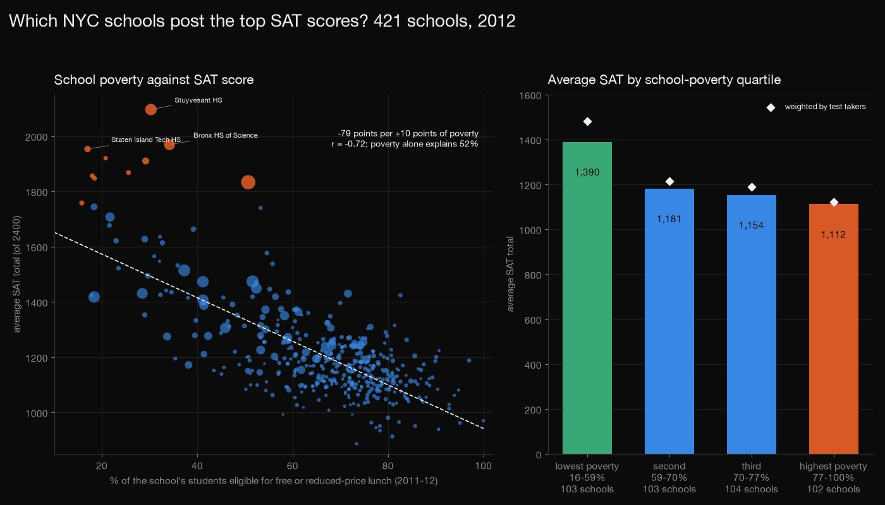
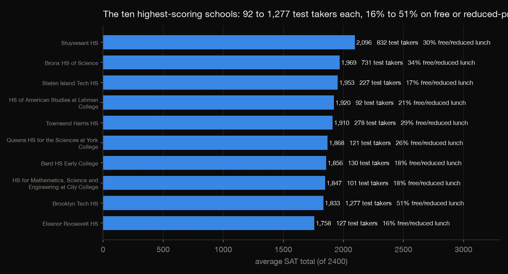
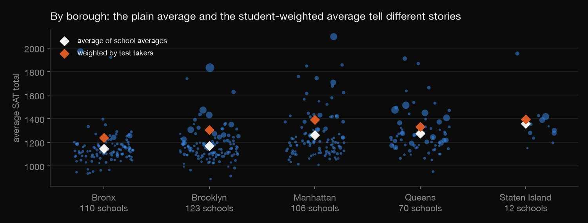
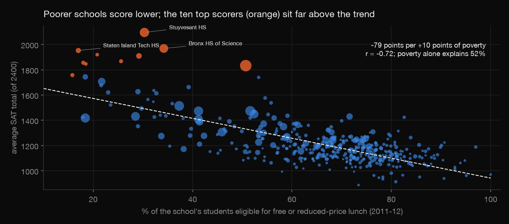
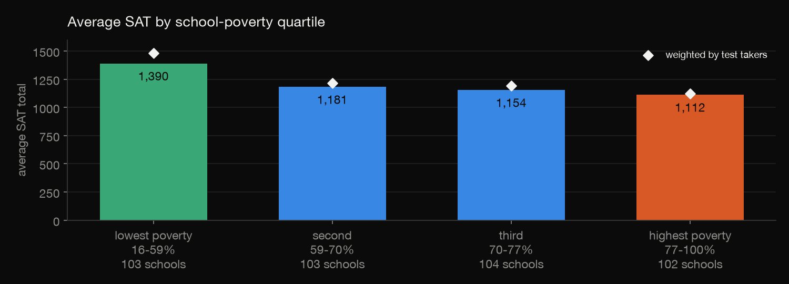

Python · Data cleaning · 2026-10
Which NYC Schools Post the Top SAT Scores?
The 2012 SAT averages of 421 New York City high schools, cleaned and joined to school poverty: the top ten, how the five boroughs compare (plain average against student-weighted), and how much of the gap school poverty alone explains.

Poverty is the school's rate, not the test takers' rate, and the 421 scored schools are those with at least five test takers. Who takes the SAT differs by school, and many top schools admit by entrance exam, audition or screening (the data does not record admissions), so scores say little about how well a school teaches. This is one year of correlations: nothing here shows that poverty causes lower scores.
01 — The problem
Every year New York publishes how each public high school did on the SAT. The table looks simple but hides traps: some schools show an "s" instead of a number, the borough is only a letter inside the school code, and the average of school averages isn't the average of students. Which schools score highest, and what separates them from the rest?
The questions follow DataCamp's "Exploring NYC Public School Test Result Scores" project. I added the school demographics table from the same city portal, to test the obvious suspect: poverty.
02 — What I built
A cleaned, joined table of 421 scored schools, and three questions answered from it:
- The best schools: the top ten, and who clears 80% of the maximum math score.
- Boroughs: the plain and the student-weighted average, and the spread.
- Poverty: correlation, a regression with robust intervals, and the average by poverty quartile.
- Check:
check.pyrebuilds everything from the raw downloads in plain Python: 126 numbers agree.
03 — How it was built
- 01
Download both tables
The SAT table (478 schools) and the 2011–12 demographics (1,509 schools) both come from NYC Open Data's API. They are small, so the downloads are committed, and the pull date and counts are recorded.
- 02
Clean the SAT table
57 of the 478 schools show an "s" instead of numbers: the city hides the averages of schools with fewer than five test takers. Reading the columns as numbers turns each "s" into a missing value rather than a zero. That leaves 421 scored schools. One row is a combined code for two programs; there are no duplicate schools.
sat[c] = pd.to_numeric(sat[c], errors="coerce") # 's' becomes missing, not zero - 03
Add the borough and the total
A school code like 01M292 is a district (01), a borough letter (M for Manhattan; K Brooklyn, X Bronx, Q Queens, R Staten Island) and a number. The total is reading + math + writing, out of 2,400 in 2012.
sat["borough"] = sat["dbn"].str[2].map(BOROUGH) # the letter after the district number - 04
Join the demographics
450 schools match a demographics row, including 412 of the scored ones. The nine scored schools that don't are alternative programs, such as Young Adult Borough Centers and GED programs, and a special-education site: 109 of the 46,445 test takers. Poverty is the share of a school's students eligible for free or reduced-price lunch.
- 05
Average the boroughs two ways
The easy borough average treats a school with 5 test takers like one with 1,277. So each borough gets two averages: the plain average of its schools, and one weighted by test takers, plus its spread.
"weighted_mean_total": g.apply(lambda d: np.average(d["total"], weights=d["takers"]), include_groups=False)}).round(1) - 06
Test the poverty explanation
Correlation (Pearson and Spearman), then a regression of the total score on poverty per 10 points with robust (HC3) intervals; again with borough effects; and again without the ten top scorers, to see whether a few outliers drive it. Schools are also cut into four equal groups by poverty.
r = sm.OLS(d["total"], sm.add_constant(X)).fit(cov_type="HC3") - 07
Check it from scratch
check.pyrereads the two raw downloads with plain Python (csv, statistics and matrix algebra; no pandas, no statsmodels) and rebuilds the cleaning counts, the rankings, every borough statistic, both correlations, all three regressions with robust intervals, and the quartiles. All 126 numbers agree.cov = inv @ (X.T * (e / (1 - h)) ** 2) @ X @ inv
04 — Results

The best schools. Stuyvesant (2,096), Bronx Science (1,969), Staten Island Technical (1,953), American Studies at Lehman (1,920) and Townsend Harris (1,910) lead. Eight schools clear 640 on math, 80% of the maximum 800, and Stuyvesant is highest at 735. The ten best have 92 to 1,277 test takers and 16% to 51% of students on free or reduced-price lunch. Many are known to admit by entrance exam or screening, which this data doesn't record.

| Borough | Schools | Plain | Weighted |
|---|---|---|---|
| Staten Island | 12 | 1,359 | 1,394 |
| Queens | 70 | 1,275 | 1,332 |
| Manhattan | 106 | 1,260 | 1,392 |
| Brooklyn | 123 | 1,167 | 1,305 |
| Bronx | 110 | 1,145 | 1,240 |
The borough ranking depends on how you average. The plain average of school averages puts Staten Island (12 schools) first and the Bronx last. Weighted by test takers, Manhattan (1,392) passes Queens (1,332) and nearly catches Staten Island (1,394): Stuyvesant alone has 832 test takers. The spread of school scores is widest in Staten Island (205) and Manhattan (202).

School poverty explains about half of the spread. Across 412 schools the correlation is −0.72 (Spearman −0.57). Each 10 points more of poverty goes with 79 fewer SAT points (95% interval 68 to 90), and poverty alone explains 52% of the variation (55% with borough effects). Without the ten top scorers the slope is −63 and R² is 0.45, so the pattern isn't only a few outliers.

By quartile, schools in the lowest-poverty quarter average 1,390 and those in the highest-poverty quarter 1,112. The two groups have about the same number of schools (103 and 102), but 22,352 test takers against 5,818: the SAT is taken by far more students at lower-poverty schools.
05 — What I'd do next
- Use test takers as a share of enrolment to see how participation changes school averages.
- Add later years, including the redesigned 1,600-point SAT, to see whether the poverty gradient moved.
- Add graduation or progress data, to look beyond a single test score.